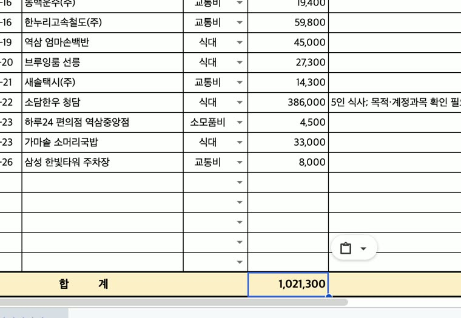

구글 시트
영수증 20장 → 경비정산서
법카 영수증 사진 20장과 회사 경비정산서 양식(엑셀)을 주면, 드라이브에 올려 구글 시트로 열고 사용일자순으로 채웁니다.
확인날짜·가게·금액 20건 모두 정답, 합계도 원 단위까지 맞았습니다. 계정과목은 16/20: 카페는 회의비 대신 식대로, 386,000원 한우 회식은 식대로 넣고 '확인 필요'를 달았습니다.
프롬프트 (@Chrome 고른 뒤 붙여 넣기)
이번 달 법인카드 경비정산 좀 해 줘. 영수증 사진이랑 회사 경비정산서 양식이 이 폴더에 있어: [영수증 사진과 양식이 든 폴더 경로] 양식을 구글 드라이브에 올려서 구글 시트로 열고, 영수증을 한 장씩 보고 채워 줘. - 사용일자 순서로 적어 줘 - 계정과목은 양식에 있는 목록에서 골라 줘 - 부서 [부서], 성명 [이름], 직급 [직급], 정산기간 [시작일 ~ 종료일] 다 하면 합계 금액이랑 시트 주소 알려 줘.